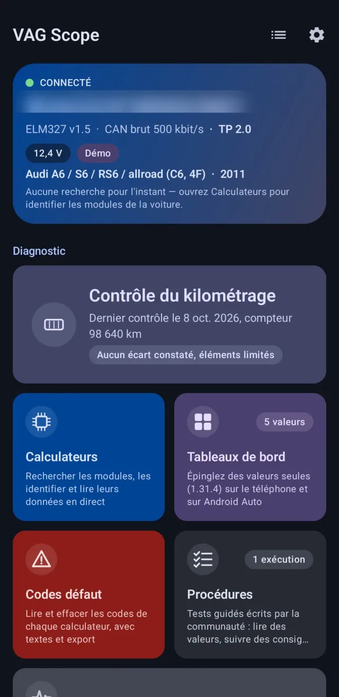
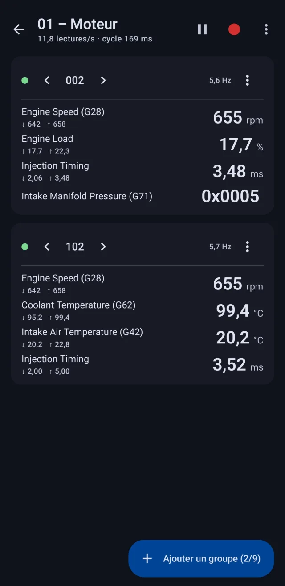
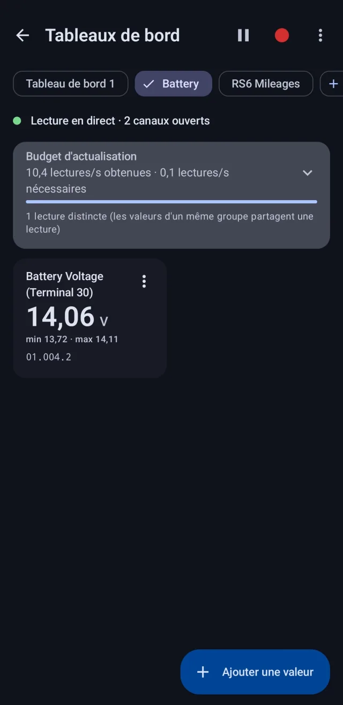
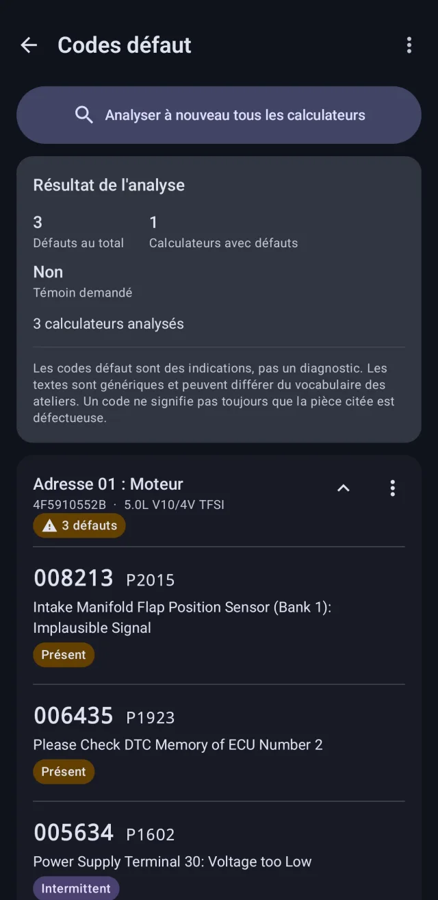
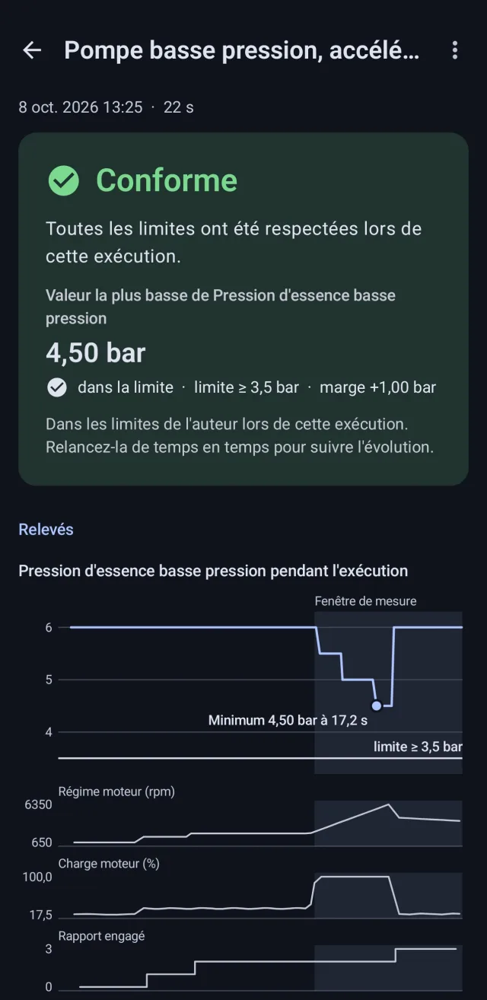
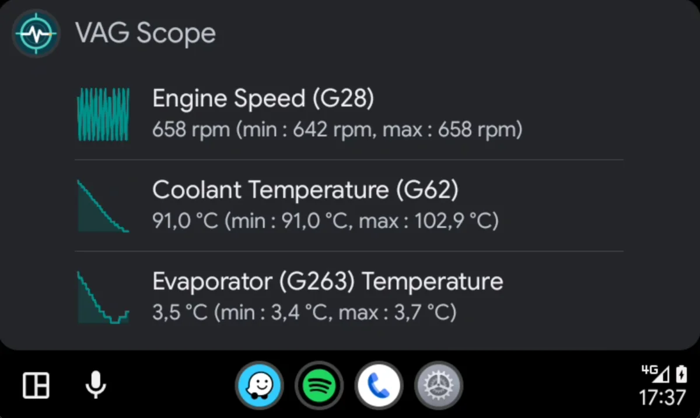
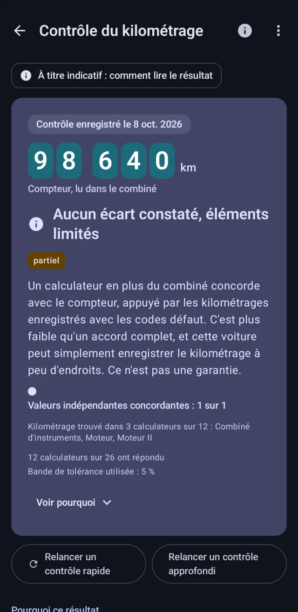
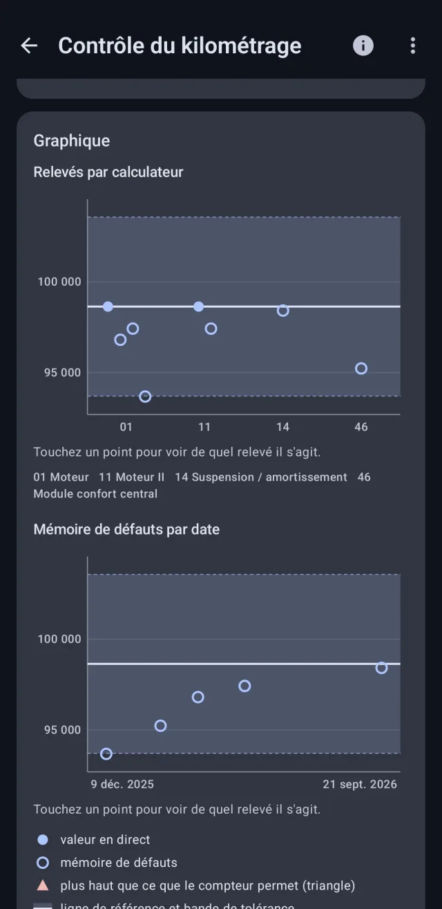

Factory-level diagnostics, in your pocket.
VAG Scope reads measuring blocks, fault codes and mileage on your Volkswagen, Audi, Seat or Škoda through a Bluetooth ELM327 adapter. No account, no network.


VAG Scope
Real diagnostics for VW, Audi, Seat and Škoda, from a cheap Bluetooth adapter and your phone.
- Live data
- Up to nine measuring blocks at once, with min and max values, a 60-second chart and CSV logging.
- Dashboards
- Pin the single values you care about, on your phone or on the car screen through Android Auto.
- Fault codes
- Every control unit, with status, freeze frames and plain texts. Clearing only after a backup and your confirmation.
- Guided procedures
- Step-by-step tests written by the community: measure, compare, conclude, then share the report.
-

Dashboards you build yourself -

Fault codes with freeze frames -

Procedures with a shareable report

On the car screen too
Show up to four live values through Android Auto, each with its min and max.
Works with a Bluetooth ELM327 adapter on cars using TP 2.0 (about 2004–2010) or UDS (about 2012 and later). Android 5.0+, English and French. Tested on an Audi RS6 C6; newer UDS cars are supported but still being verified, so feedback is welcome.


Check the odometer against the car’s own memory.
VAG Scope reads the distance stored in every control unit that keeps one, compares it with the dashboard, and shows its working: which units agree, which do not, and the margin it allowed.
Handy before you buy a used car. The result is a guide, never a guarantee, and it will not tell you a car is “genuine”.
Recommended adapters
VAG Scope talks to your car through a Bluetooth ELM327 adapter. This is the one it was tested with.
Your data stays with you.
VAG Scope has no internet permission, no account, no advertising and no analytics. Read the full privacy policy.